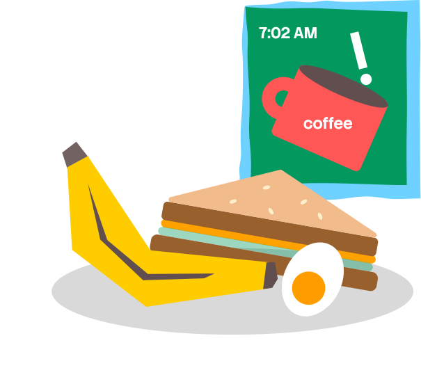
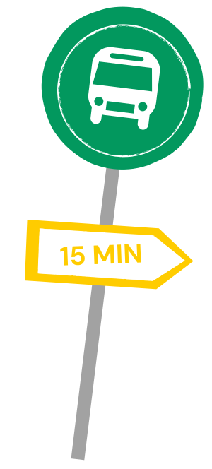
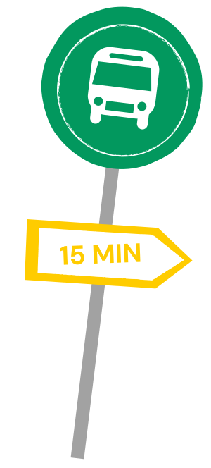

MY
DAY
IN
LIFE

(Weekday routine)
On a normal day, I wake up to at least two alarms, wash up, make
breakfast, and then leave to catch the bus. On the way or before class,
I'll usually write a quick to-do list for the day so I don't forget
everything. I spend most of the day in class, and after school I come
back home and study with friends. We just sit there doing work for
hours, forget about eating, and then I end up going to sleep way later
than I planned.
Sometimes I'm with friends, but I actually focus better when I study
by myself. I get stressed pretty easily, especially when there are a
lot of deadlines at the same time. I'm always worrying about what I
still haven't finished, so writing everything down and crossing things
off slowly makes me feel a little bit more in control.

 

Joy Zhang
(647)-527-1668
j2638zha@uwaterloo.ca
Linkedin↗
CONTACT ME